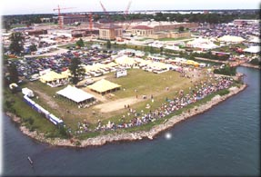
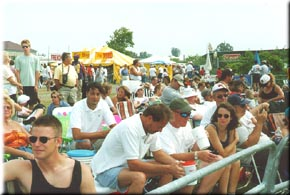

|
Located near the main grandstands with an access bridge to the Pit and Hydromart merchandise areas. For 2002 this park is corporate hospitality tents only - no general admission. The tents seen in the rear of the park will be setup as close as possible to the shoreline. Catering by Andiamo and The Crystal Gardens. For more info and to make your reservation, contact Andiamo and The Crystal Gardens directly at (734)324-0068 [fax = (734)285-5533].
  (Photos copyright 2000 Joe Dabliz)
All contents Copyright © 1997-2000 Spirit of Detroit THUNDERFEST, except where noted.
Web page created by Brian Reed.
|